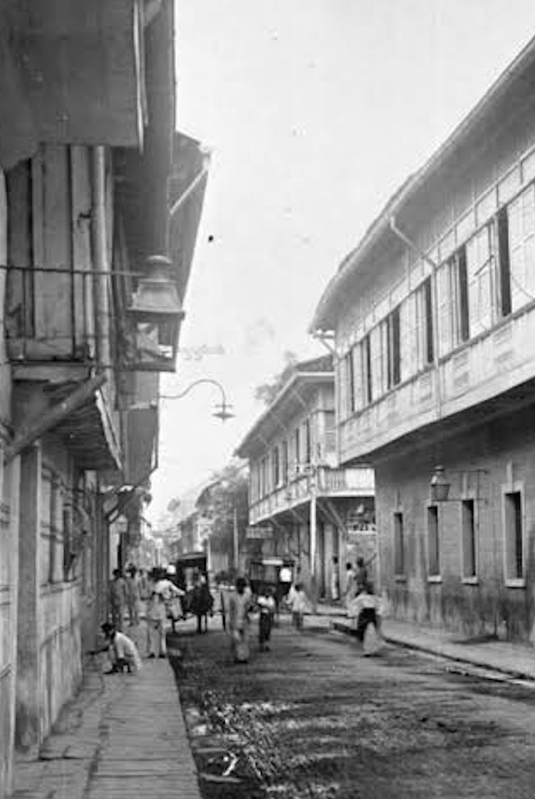

El Filibusterismo was the sequel to Rizal's Noli Me Tangere , and it was published in 1891. Compared to the first volume of the cycle, El Filibusterismo was a more tragic and nihilistic work that demonstrated the injustice of the colonial regime. It unveiled the oppression of Filipino people and introduced the reader to the life of a secret society of revolutionaries (Schumacher, 1997).
